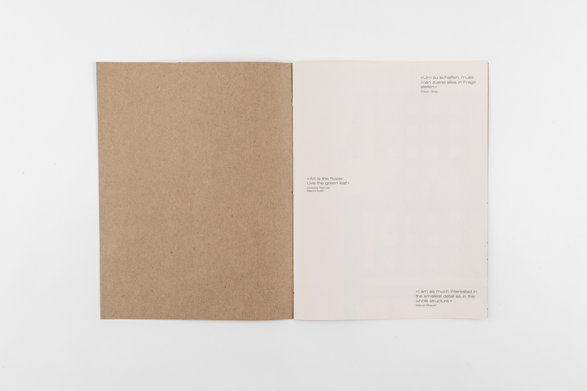
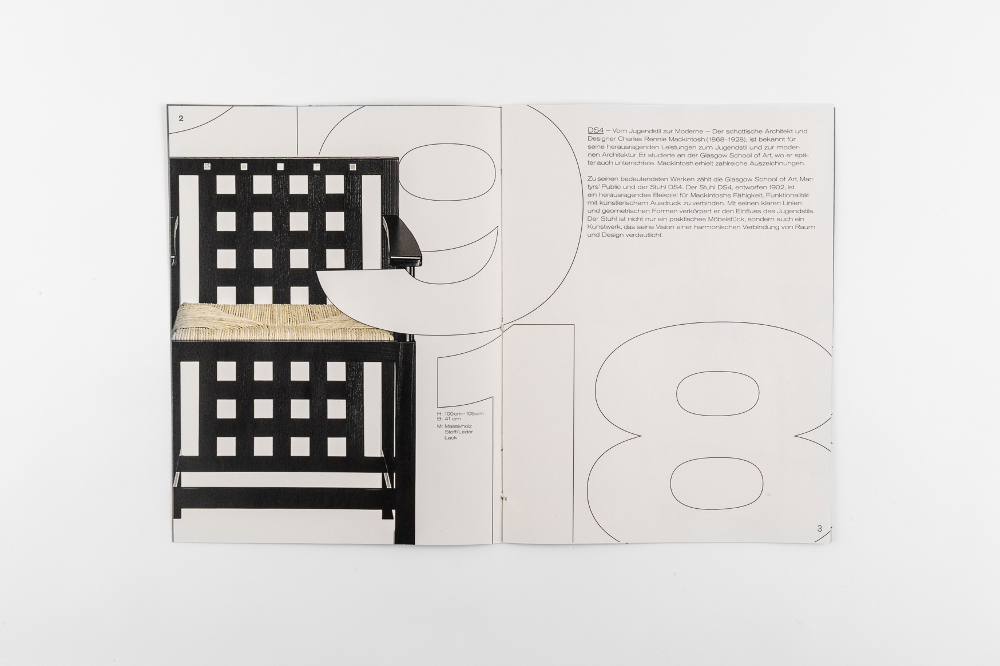
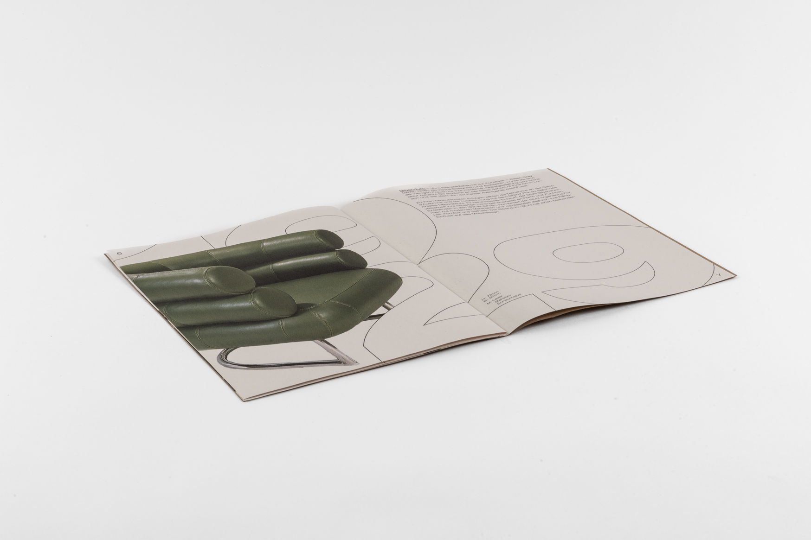

Mia Schilter
DS4
bauhaus
graphic
zweimal


Mein Projekt

Das Magazin gibt einen kompakten Einblick in die Bauhaus-Stühle DS4 Bibendum und B32. Im Fokus stehen Entstehungszeit, Zitate der Designer sowie ausgewählte Informationen zu Proportionen und Maßen. Das Projekt versteht sich als visuelle und inhaltliche Annäherung an zwei ikonische Designobjekte des 20. Jahrhunderts.

Layout 1
Bauhaus